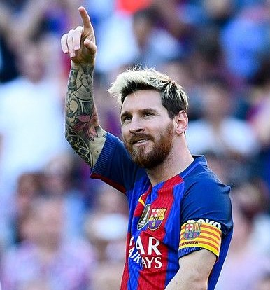
Lional Messi
Lionel Messi, who won the Golden Ball award before the Copa America final, won the Golden Boot award over Luis Diaz of Colombia!
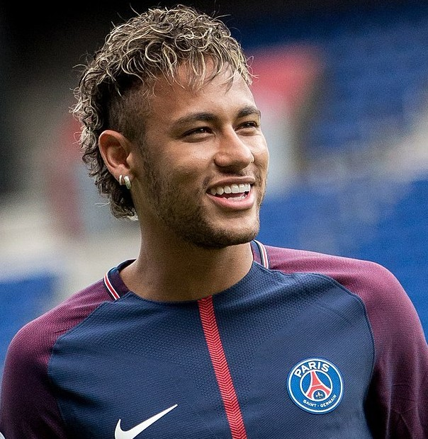
Neymar
Neymar had a peculiar tournament in some ways. No one would suggest he was poor, because he was routinely the player that provided the spark for Brazil
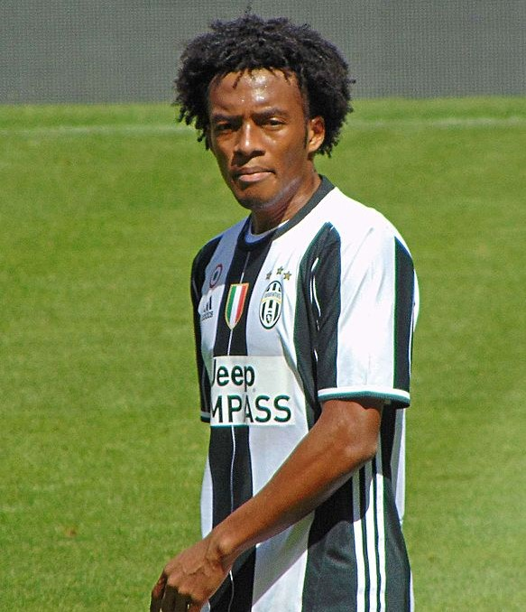
Juan Cuadrado
Cuadrado made his senior professional debut for Medellin in 2008 against Boyaca Chico. He made 30 appearances and remained in the club until 2009 before making the leap to European football.
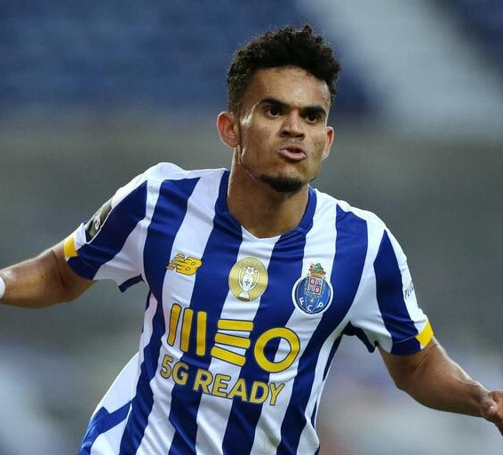
Luis Díaz
ASUNCION, July 13 (Reuters) - Colombia forward Luis Diaz was named Revelation of the Copa America on Tuesday by tournament organisers the South American Football Confederation (CONMEBOL).
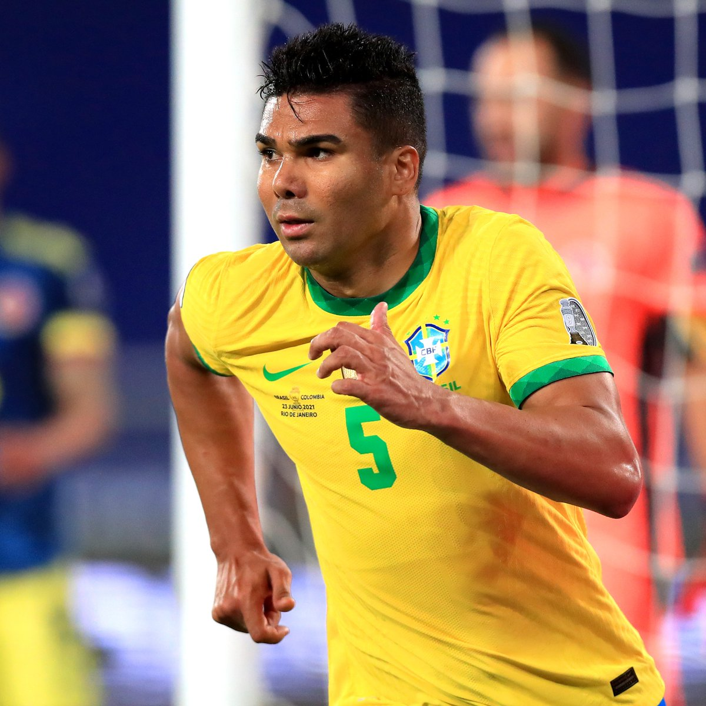
Casemiro
Carlos Enrique Casemiro is a Brazilian footballer who plays for Real Madrid, primarily as a defensive midfielder.He is a multiple Champions League winner
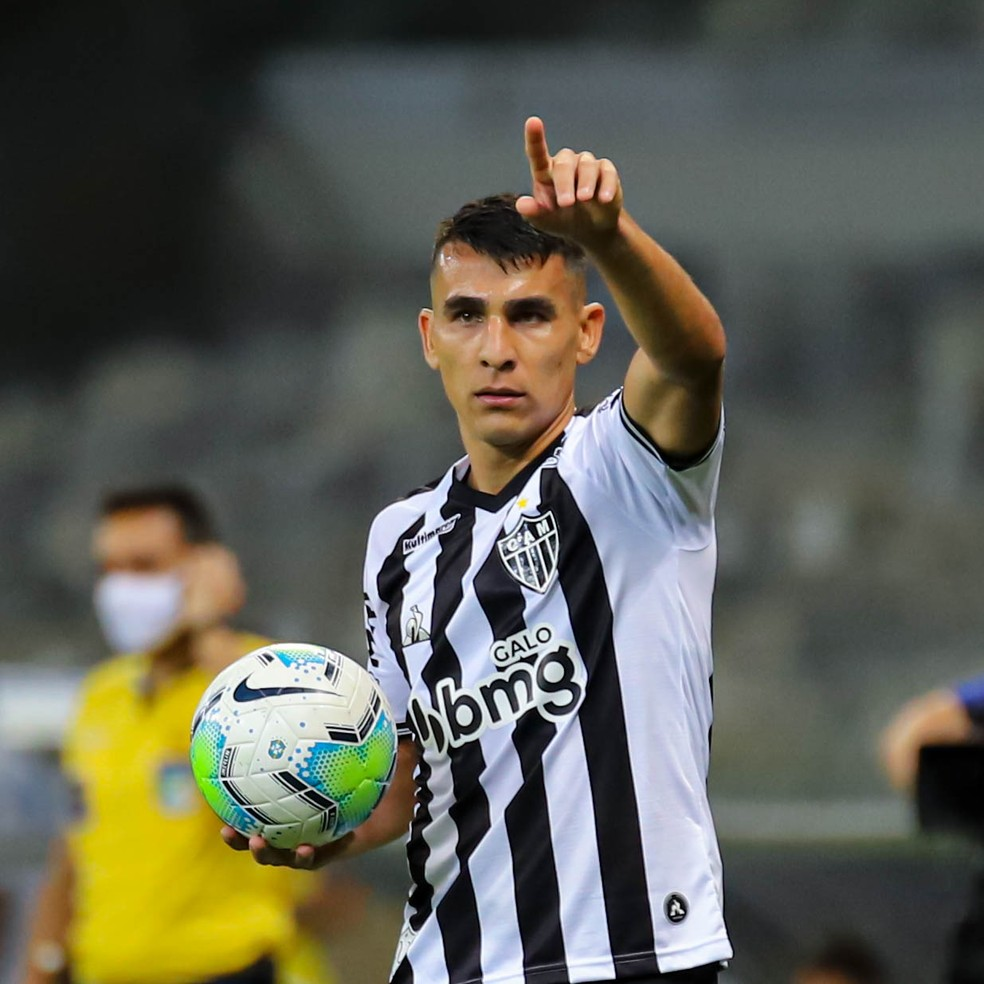
Junior Alonso
O zagueiro titular do Atlético, Junior Alonso, tem feito falta na equipe enquanto disputa a Copa América pela seleção do Paraguai. Com a camisa Albirroja, o xerife da zaga também tem se destacado e é um dos melhores da posição no torneio disputado no Brasil.
Éder Militao
Éder Gabriel Militão (Brazilian Portuguese: [ˈɛdɛʁ ɡabɾiˈɛw miliˈtɐ̃w]; born 18 January 1998) is a Brazilian professional footballer who plays for Spanish club Real Madrid and the Brazil football team. Mainly a central defender, he can also play as a right back
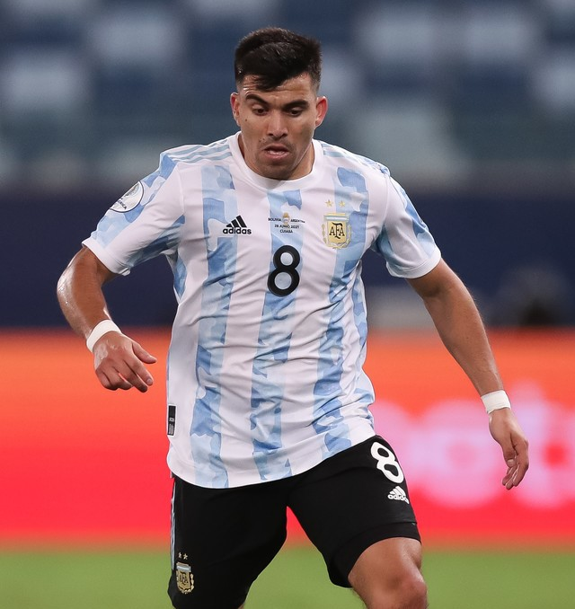
Marcos Acuña
Acuña began his athletic training at Club Don Bosco in his hometown. At that time he played as a left wing-back. His good performance got him noticed by scouts who invited him to perform tests at various clubs in Buenos Aires.
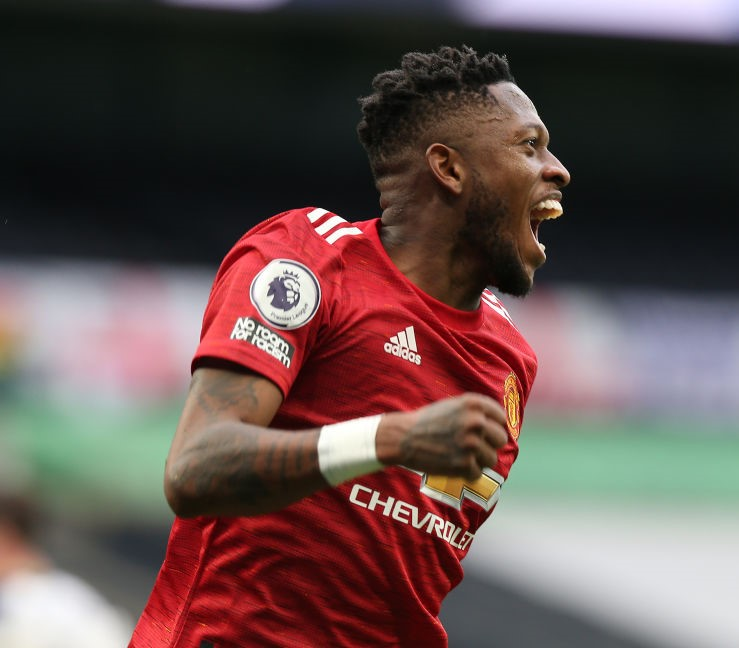
Fred
Fred started his career at Brazilian club Internacional, where he won the Campeonato Gaúcho twice. In June 2013, he signed for Ukrainian club Shakhtar Donetsk, where he won three Ukrainian Premier League titles. In 2018, Fred signed for Manchester United.
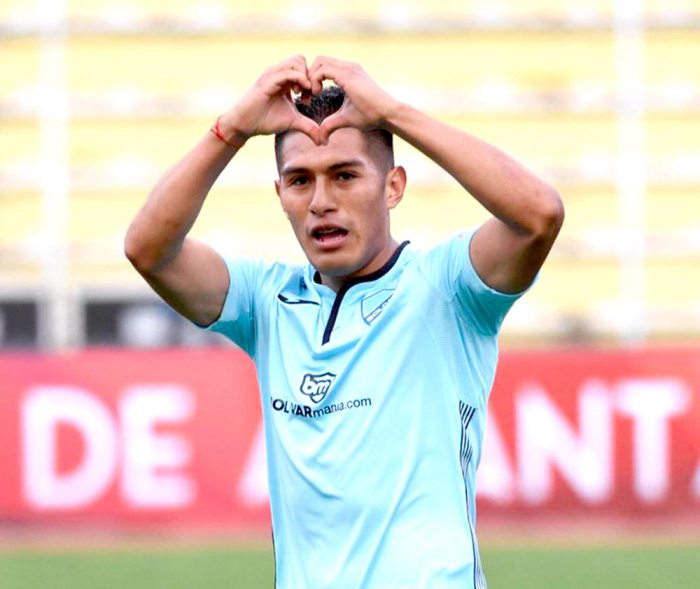
Erwin Saavedra
Erwin Mario Saavedra Flores is a Bolivian footballer who plays for Bolívar and the Bolivia national team. Mainly a right midfielder, he can also play as a right-back.
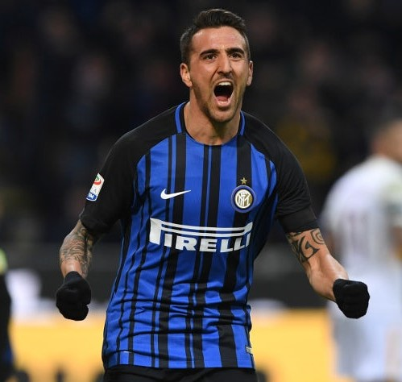
Matías Vecino
Only One Of Inter Midfield Trio Matias Vecino, Roberto Gagliardini & Stefano Sensi Will Be Sold This Summer, Italian Media Claim. Inter could lose a midfielder this summer, but will not want to leave the options in the centre of the pitch available to....
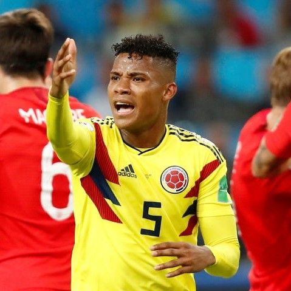
Wilmar Barrios
Barrios was given a red card for two bookable offences during the second leg of the 2018 Copa Libertadores Finals against rivals River Plate held at the Santiago Bernabéu Stadium.